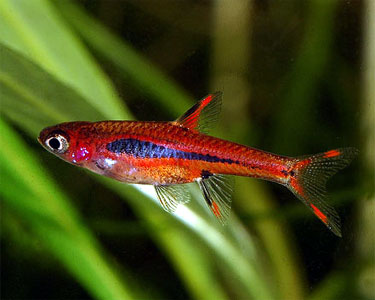

Species Profile
Boraras brigittae - Mosquito Rasbora
Contents
Synonyms
Rasbora urophthalma brigittae Vogt, 1978
Back to Top
Etymology
Boraras: anagram of the generic name Rasbora, in reference to the reversed ratio of abdominal and caudal
vertebrae in this genus.
brigittae: named for the author’s wife.
Back to Top
Classification
Order: Cypriniformes Family: Cyprinidae
Back to Top
Distribution
Appears to be endemic to southwestern Borneo though occurence records are scant. The type locality is ‘Bandjarmasin’, a port town in the Indonesian province of Kalimantan Selatan (South Kalimantan), and following Kottelat (1991) it’s range extends westwards as far as the Jelai Bila river basin, near the town of Sukamara, where it’s said to occur sympatrically with the congener B. merah (but see ‘Notes’).
Back to Top
Habitat
Inhabits black water streams and pools associated with ancient forest peat swamps. The water is stained
brown due to the release of tannins and other chemicals released by decomposing organic matter and the
substrate scattered with fallen leaves, twigs and branches. Such environments characteristically contain
very soft (negligible hardness), acidic (pH as low as 4.0) water and are often dimly-lit due to dense
marginal vegetation and the forest canopy above.
Across much of Southeast Asia these precious
biotopes are under threat from rubber or palm oil plantations, building developments and other human
activities.
Back to Top
Standard Length
15 – 20 mm.
Back to Top
Aquarium Size
Though small it still needs space to swim and dominant males will form temporary territories when spawning so a group is best kept in an aquarium with base dimensions of at least 45 ∗ 30 cm.
Back to Top
Maintenance
Best maintained in a densely-planted aquarium and is an excellent choice for the carefully-aquascaped
set-up. The addition of some floating plants and driftwood roots or branches to diffuse the light
entering the tank also seems to be appreciated and adds a more natural feel. Filtration does not need to
be particularly strong as it mostly hails from sluggish waters and may struggle if there is a fast
current.
To see it at its best a biotope-style set-up can also make an interesting project. A
soft, sandy substrate is probably the best choice to which can be added roots and branches, placed in
such a way that plenty of shady spots are formed. The addition of dried leaf litter further emphasises
the natural feel and encourage growth of microbe colonies as decomposition occurs. These tiny creatures
can provide a valuable secondary food source for fry whilst the tannins and other chemicals released by
the decaying leaves are thought to be beneficial for blackwater fish species.
Leaves can be left
in the tank to break down fully or removed and replacedevery few weeks. Fairly dim lighting should be
used to simulate the conditions the fish would encounter in nature. You could add aquatic plants that
can survive under such conditions such as Microsorum pteropus, Taxiphyllum barbieri or Cryptocoryne
spp.
Do not introduce any Boraras sp. to a biologically-immature aquarium as they can be
susceptible to swings in water chemistry.
Back to Top
Water Conditions
Temperature: 20 – 28 °C
pH: 4.0 – 7.0
Hardness: 18 – 179 ppm
Back to Top
Diet
As with other Boraras species it is likely to be a micropredator feeding on small insects, worms, crustaceans and other zooplankton in nature. In the aquarium it will accept dried foods of a suitable size but should not be fed these exclusively. Daily meals of small live and frozen fare such as Daphnia, Artemia along with good quality flakes and granules will result in the best colouration and encourage the fish to come into breeding condition.
Back to Top
Behavior and Compatibility
This species is very peaceful but does not make an ideal community fish due to its small size and rather
timid nature. It will do best when maintained alone or with other diminutive species such as
Microdevario, Sundadanio, Danionella, Eirmotus, Trigonostigma, pygmy Corydoras and small Loricariids
such as Otocinclus.
It also makes an ideal companion for shy anabantoids such as Sphaerichthys,
Parosphromenus or the more diminutive Betta species, and in a planted set-up can be housed alongside
freshwater shrimp of the
genera Caridina and Neocaridina. It’s a schooling species by nature and really should be kept in a group
of at least 8-10 specimens. Maintaining it in decent numbers will not only make the fish less nervous
but will result in a more effective, natural-looking display. Males will also display their best colours
and some interesting behaviour as they compete with one other for female attention.
Back to Top
Sexual Dimorphism
Mature females are noticeably rounder-bellied and often a little larger than males. Males are generally more attractive with dominant individuals often displaying intense colouration.
Back to Top
Reproduction
Like many small cyprinids this species is an egg-scattering, continuous spawner that exhibits zero
parental care. That is to say when in good condition and in the presence of both males and females
relatively small numbers of eggs will be laid daily. In a well-furnished, mature aquarium it is
therefore possible that small numbers of fry may start to appear without human intervention.
However if you want to increase the yield of fry a slightly more controlled approach is required. The
adult group can still be conditioned together but one or more small, perhaps 10-15 litre, containers
should also be set up.
These should be very dimly lit with the base either left bare or covered
with some kind of mesh of a large enough grade so that any eggs that fail to adhere to the plant can
pass through but small enough
so that the adults cannot reach them.
The widely available plastic ‘grass’-type matting can also
be used and works very well. The water itself should be of pH 5.0-6.5, 1-5°H with a temperature towards
the upper end of the range suggested above.
A decent-sized clump of Java moss or other
fine-leaved plant should also be added filling perhaps half the available space. Filtration is not
really necessary but you can use a small, air-powered sponge
filter if you prefer.
Two or three pairs of well-conditioned adult fish should then be introduced
to each container. It is wise to make the transfer slowly in order to avoid excessive levels of stress
but if conditions are to
their liking they should begin to spawn the following morning. While this species certainly will eat its
eggs it appears not to actively hunt for them as is the case with many small cyprininds. Once spawning
has commenced it should continue on a daily basis.
The pair(s) should be left in situ for no more
than a couple of days before being removed as the first eggs should hatch by the second day after the
initial spawning. The tiny young will survive on their yolk sacs for another 24 hours or so after which
they will require Paramecium or other microscopic food.
After a week to ten days they should be
large enough to accept Artemia nauplii/microworm etc. As the days pass additional fry should start to
appear from later spawning events. It’s best to wait a week or
two before starting to perform small water changes in order to avoid unduly shocking the young fish.
Back to Top
Notes
The congener B. urophthalmoides is often traded as B. brigittae, presumably in order to obtain a more
favourable price. Though these are similar in that they’re the only two members of the genus to possess
a dark lateral body stripe B. brigittae is easily identifiable by its larger adult size, lack of
distinct dark blotch at the caudal peduncle, comparitively short, often broken lateral stripe and
overall brighter, more uniformly red patterning. It’s sometimes seen on sale with the alternative
vernacular names ‘chili rasbora’ or ‘dwarf rasbora’.
B. merah is also similar-looking but it
lacks colour in much of the body with the red pigmentation tending to be concentrated around the dark
body markings which do not usually form an unbroken stripe. Striped male individuals do exist, however,
and this has led to speculation that B. brigittae and B. merah are the same species (Körner, 2010). The
same author also reported that in an ‘eastern’ population (from the area around Banjarmasin?) both sexes
develop a striped pattern before maturity, while in the
‘central’ population (Palangkaraya, where fish are collected for the aquarium trade) only males develop
the striped colour pattern, and only when sexually mature. Kottelat (2013) argued that the different
ontogenies in colour pattern, and presumed geographical distribution of these two populations, supports
the existence of two species, whilst also noting that Palankaraya is not close to the type locality of
B. merah; the Sungei Jelai Bila river basin in Kalimantan Tengah, much further west.
Boraras was erected in 1993 in order to separate a small group of species from the larger Rasbora
assemblage on the basis of differences in morphology and reproductive strategy.
In older literature they are therefore referred to as members of Rasbora and following Liao et al.
(2010) the genus is a member of the rasborin sub-group within the subfamily Danioninae (the other
sub-group contains the danionins). This group is further subdivided into six clades (clusters of
closely-related species) of which Boraras (or at least B. brigittae; the only species involved in the
study) is included in ‘clade three’ alongside Horadandia atukorali, Rasboroides vaterifloris,
Trigonostigma heteromorpha and three species previously included in Rasbora but moved into new genera by
the authors; Trigonopoma gracile, T. pauciperforatum and Rasbosoma spilocerca.
Of these it was found to form a monophyletic group with Rasboroides meaning these two derived from the
same common ancestor. The results for B. brigittae and T. heteromorpha were found to be inconclusive in
some respects and further work regarding their phylogenetic position was recommended.
Shortly afterwards a paper investigating systematics of the subfamily Danioninae was published by Tang
et al. (2010) Their results differed from those of Liao et al. and their conclusion was to synonymise
the four new genera plus Boraras and Trigonostigma with Rasbora based on an incomplete knowledge of
relationships within the group, an approach they describe as ‘more conservative’. This has not been
followed by the majority of authors, however, and the separate groupings are maintained in the extensive
work by Kottelat (2013), which is followed here.
The small adult size in Boraras species evolved
via a process known as miniaturisation, characterised by sexually mature adults with a significantly
reduced size of less than 20 mm SL.
Among bony fishes cyprinids are one of the few groups in
which this phenomenon occurs repeatedly with
all Barboides, Danionella, Microdevario, Microrasbora, Horadandia, Boraras, Paedocypris, Sawbwa and
Sundadanio species representing miniaturised taxa along with a few members of Danio, Laubuca and
Rasbora. All show a preference for still or slow-moving waters, often in nutrient-poor habitats such as
forest peat swamps.
The anatomical structure of miniaturised cyprinids can vary greatly, and
there are two principle ‘groupings’ with some species possessing intermediate features to some degree.
The first contains those
fishes which though small are essentially proportionally dwarfed versions of their larger relatives,
e.g., Barboides, Microdevario, Microrasbora, Boraras, etc.
The other includes those in which
anatomical development stops at a point where adult still resemble a larval form of their larger
ancestor, i.e., Danionella and Paedocypris.
The latter are usually referred to as
‘developmentally truncated’ or ‘paedomorphic’ and are thought to have evolved via a process known as
‘progenetic paedomorphosis’ i.e. paedomorphosis brought about by
accelerated maturation. They typically exhibit a simplified skeletal structure along with
species-specific morphological peculiarities.
Britz et al. (2009) consider that developmental
truncation may have facilitated the development of such novelties ‘by freeing large parts of the
skeleton from developmental constraints, dissociating developmentally linked pathways and creating a
greater potential for more dramatic changes’.
Boraras species from the Malay Archipelago (B.
brigittae, B. maculatus and B. merah) tend to have a
slimmer, more elongate body profile than those from Indochina (B. micros, B. urophthalmoides, B. naevus)
which may assist when attempting to identify them.